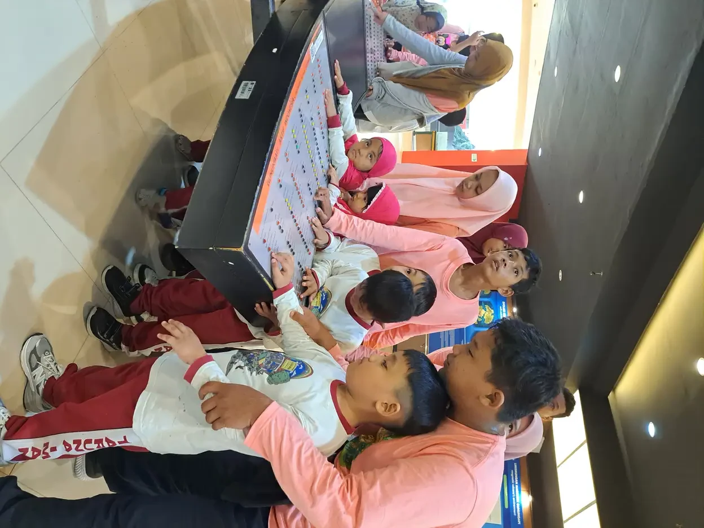
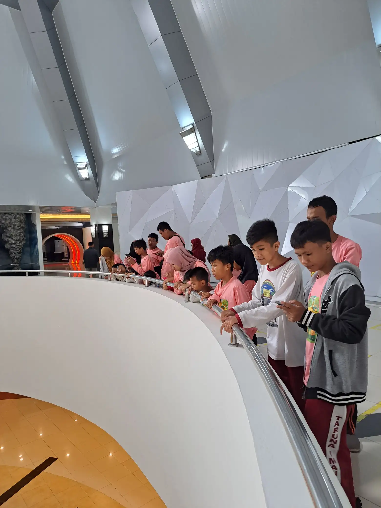
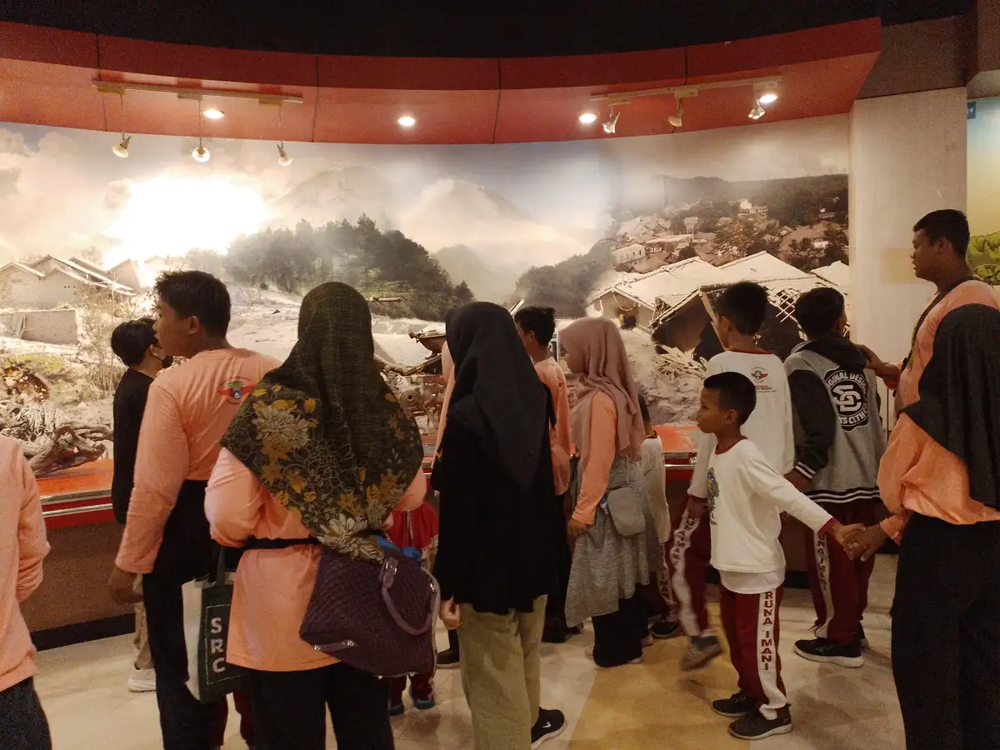

Melatonin dapat membantu sebagian anak autis yang mengalami gangguan tidur, tetapi tidak otomatis aman untuk setiap anak dan bukan untuk dicoba sendiri. Pedoman American Academy of Neurology menempatkan pemeriksaan penyebab gangguan tidur serta strategi perilaku sebagai langkah awal. Dokter dapat mempertimbangkan melatonin jika langkah tersebut belum membantu. Manfaat, kemungkinan efek samping, mutu produk, dan ketidakpastian penggunaan jangka panjang perlu dibahas bersama dokter anak.
Daftar Isi
- Apa arti aman ketika membahas melatonin untuk anak autis?
- Apa yang sebenarnya dianjurkan pedoman AAN?
- Mengapa penyebab sulit tidur perlu dicari lebih dahulu?
- Strategi perilaku dahulu bukan menyalahkan pengasuhan
- Manfaat yang diteliti dan batas yang perlu dipahami
- Efek samping dan ketidakpastian jangka panjang
- Mengapa mutu produk dan penyimpanan penting?
- Catatan apa yang sebaiknya dibawa saat konsultasi?
- Mengelola kelelahan keluarga tanpa mengambil jalan pintas
- Kapan perlu bantuan segera dan apa kesimpulannya?
- Pertanyaan yang sering diajukan tentang melatonin
Apa arti aman ketika membahas melatonin untuk anak autis?
Pertanyaan tentang keamanan sering muncul setelah keluarga berulang kali menghadapi malam yang melelahkan. Namun, kata aman perlu diuraikan: aman bagi siapa, untuk masalah tidur apa, dengan sediaan apa, serta dalam pemantauan seperti apa? Seorang anak yang sulit mulai tidur dapat membutuhkan penilaian berbeda dari anak yang terbangun karena nyeri. Diagnosis autisme saja tidak menjawab pertanyaan tersebut dan tidak menjadi alasan otomatis untuk memberikan suplemen tidur.
Melatonin adalah hormon yang ikut mengatur waktu tidur dan terjaga. Produk melatonin dari luar tubuh diteliti untuk membantu masalah tidur tertentu, bukan untuk menghilangkan autisme. Penjelasan dasar mengenai autisme dan kebutuhan dukungan individual membantu keluarga memisahkan tujuan meningkatkan kenyamanan tidur dari klaim mengubah identitas atau keseluruhan perkembangan anak. Tidur lebih baik tidak sama dengan menyembuhkan autisme.
Dalam pengambilan keputusan, manfaat harus dibandingkan dengan risiko dan keadaan anak. Keluarga berhak bertanya jika penjelasan terdengar seperti jaminan. Kata alami, testimoni orang tua lain, atau banyaknya ulasan produk tidak membuktikan keamanan individual. Pembahasan yang bertanggung jawab juga mengakui keterbatasan pengetahuan, terutama ketika penggunaan berlanjut lama. Tujuan konsultasi bukan mendapatkan izin membeli produk tertentu, melainkan menyusun penanganan gangguan tidur yang masuk akal dan dapat dievaluasi.
Apa yang sebenarnya dianjurkan pedoman AAN?
Pedoman AAN tentang gangguan tidur pada anak dan remaja dengan autisme menjelaskan urutan pertimbangan klinis. Tenaga kesehatan perlu menilai kondisi yang menyertai dan obat yang dapat berkontribusi terhadap gangguan tidur, lalu mengatasi masalah yang ditemukan. Orang tua juga perlu mendapat penjelasan mengenai kebiasaan tidur dan pendekatan perilaku sebagai langkah pertama. Rekomendasi tersebut ditujukan kepada tenaga klinis, bukan petunjuk penggunaan mandiri.
Jika strategi perilaku belum membantu dan faktor penyerta sudah ditangani, dokter dapat menawarkan melatonin. Pedoman turut menekankan mutu sediaan serta pembicaraan mengenai efek yang tidak diinginkan dan keterbatasan data keamanan jangka panjang. Karena itu, ringkasan yang hanya berbunyi melatonin direkomendasikan untuk anak autis kehilangan syarat pentingnya. Tidak semua kesulitan tidur mempunyai mekanisme atau respons penanganan yang sama.
Pedoman itu diterbitkan pada 2020 dan menilai penelitian yang tersedia dalam cakupannya. Ia bukan jaminan bahwa semua produk yang sekarang dipasarkan identik dengan produk penelitian. Untuk penerapan di rumah, keluarga dapat mulai dari pembahasan pengaturan waktu tidur anak autis, sambil membawa hasil pengamatan kepada dokter. Artikel ini sengaja tidak menyalin dosis penelitian karena angka dalam uji klinis tidak dapat dipindahkan menjadi resep bagi anak yang belum diperiksa.
Keluarga juga dapat meminta dokter menjelaskan bagaimana keputusan akan ditinjau kembali. Contohnya, informasi apa yang perlu dilaporkan bila tidur berubah tetapi anak justru lebih sulit beraktivitas saat terjaga? Siapa yang dapat dihubungi bila muncul keluhan baru? Pertanyaan semacam ini membantu membedakan pemantauan dari sekadar meneruskan kebiasaan. Kesepakatan tidak perlu memakai istilah teknis yang rumit. Yang penting, keluarga memahami tujuan penanganan dan mempunyai jalur komunikasi yang jelas. Bila penjelasan belum dipahami, meminta penjelasan ulang adalah hak keluarga, bukan tanda tidak kooperatif.
Mengapa penyebab sulit tidur perlu dicari lebih dahulu?
Perilaku sebelum tidur adalah informasi, bukan bukti bahwa anak sengaja menolak aturan. Anak mungkin merasa tidak nyaman, sulit memperkirakan pergantian kegiatan, atau belum dapat mengungkapkan keluhannya. Pedoman AAN membahas kemungkinan kontribusi kondisi penyerta, termasuk masalah pencernaan, epilepsi, kecemasan, dan pengobatan lain. Daftar tersebut bukan alat diagnosis di rumah. Dokter menentukan pertanyaan dan pemeriksaan yang relevan berdasarkan riwayat serta tanda yang ditemukan.
Ceritakan apakah masalah utamanya sulit mulai tidur, sering bangun, bangun terlalu pagi, atau jadwal tidur yang bergeser. Beri tahu dokter bila ada dengkuran kuat, napas tampak terhenti, nyeri, atau perubahan perilaku yang tidak biasa. Jangan menyimpulkan setiap bangun malam sebagai kekurangan melatonin. Obat atau suplemen yang menimbulkan kantuk tidak otomatis mengatasi penyebab anak terbangun.
Bagi anak yang belum menggunakan ujaran dengan lancar, amati cara ia menunjukkan rasa tidak nyaman tanpa memaksa jawaban. Dukungan komunikasi augmentatif dan alternatif dapat menjadi bahan diskusi dengan tim pendamping, misalnya untuk memilih simbol sakit, terlalu terang, atau perlu bantuan. Jika keluarga mencurigai sensitivitas terhadap lingkungan, catatan tentang suara dan pencahayaan lebih berguna daripada menebak diagnosis baru. Gambaran umum pemrosesan sensori dapat membantu menata pertanyaan, tetapi tidak menggantikan evaluasi gangguan tidur.

Strategi perilaku dahulu bukan menyalahkan pengasuhan
Mendahulukan strategi perilaku tidak berarti orang tua dianggap gagal. Keluarga memerlukan langkah yang dapat dijalankan dengan kemampuan anak, lingkungan rumah, dan sumber daya yang tersedia. Rutinitas yang dapat diperkirakan, waktu bangun yang relatif konsisten, serta transisi yang tenang merupakan bahan pembicaraan awal. Bila suatu langkah memperbesar distress atau membahayakan, jangan mempertahankannya hanya demi terlihat disiplin. Mintalah penyesuaian dari tenaga yang mendampingi.
Pilih kegiatan penutup hari yang sederhana dan dapat diulang. Anak bisa diberi tahu urutan kegiatan melalui benda, foto, atau simbol yang sudah dikenalnya. Panduan jadwal visual anak autis berguna untuk memikirkan bentuk dukungan, bukan membuat jadwal yang harus sama bagi semua keluarga. Hindari mengubah banyak hal sekaligus sehingga keluarga kesulitan memahami perubahan mana yang membantu atau justru mengganggu.
HealthyChildren dari AAP menegaskan bahwa melatonin bukan pengganti rutinitas tidur yang baik. Bahas pula kebiasaan layar malam hari melalui pengaturan screen time anak autis, tanpa menjadikan layar satu-satunya tersangka. Guru dan anggota keluarga lain dapat membantu menjaga komunikasi tentang pola harian. Strategi yang berhasil bukan yang paling keras atau paling rumit, melainkan yang mendukung rasa aman, memungkinkan istirahat, dan dapat dievaluasi dengan pengamatan yang jelas.
Sebagai persiapan, keluarga dapat memilih satu kendala paling nyata untuk dibicarakan, misalnya perpindahan dari bermain menuju kegiatan penutup hari. Tuliskan dukungan yang sudah tersedia dan bagian yang masih sulit, bukan daftar kesalahan anak. Bila rumah dihuni beberapa orang, perubahan lingkungan perlu dirundingkan bersama. Kebutuhan istirahat saudara dan pengasuh juga penting. Hindari membandingkan keluarga dengan contoh rutinitas yang tampak sempurna di media sosial. Langkah yang realistis dapat berbeda antar rumah, dan evaluasinya sebaiknya mempertimbangkan kenyamanan anak serta beban yang benar-benar dapat ditanggung keluarga.

Manfaat yang diteliti dan batas yang perlu dipahami
Ringkasan NCCIH mengenai autisme dan pendekatan kesehatan komplementer menyatakan bahwa hasil penelitian menunjukkan melatonin dapat membantu masalah tidur pada sebagian anak dengan autisme. Manfaat yang dibahas berkaitan dengan tidur, termasuk waktu untuk mulai tertidur dan lama tidur. Pernyataan tersebut tidak berarti setiap anak akan mendapatkan perbaikan yang sama, atau semua jenis gangguan tidur pasti merespons.
Penelitian menggunakan peserta, sediaan, cara penilaian, dan masa pemantauan tertentu. Produk yang dibeli dari penjual umum belum tentu mempunyai karakteristik yang sama. Hasil pada kelompok penelitian juga tidak menunjukkan respons anak tertentu sebelum penanganan dicoba di bawah pengawasan. Karena itu, dokter perlu menyepakati sasaran yang nyata bersama keluarga, bukan sekadar meminta anak tampak lebih tenang pada malam hari.
Sasaran dapat berupa berkurangnya kesulitan mulai tidur atau membaiknya keadaan anak saat terjaga, sesuai masalah yang memang dinilai. Jika tidak tampak manfaat yang diharapkan, keluarga perlu menghubungi dokter untuk meninjau ulang rencana, bukan terus menambah produk. Dukungan dalam pendampingan anak autis sehari-hari tetap penting. Melatonin tidak menggantikan komunikasi yang aksesibel, pendidikan yang sesuai, atau penanganan kondisi lain. Mengukur hasil secara spesifik membantu mencegah janji yang melampaui bukti penelitian.
Efek samping dan ketidakpastian jangka panjang
AAP melalui HealthyChildren tentang melatonin untuk anak mengingatkan bahwa kantuk pada pagi hari dan kemungkinan meningkatnya berkemih malam dapat terjadi. Pedoman AAN serta ringkasan NCCIH juga membahas keluhan seperti sakit kepala atau pusing. Keluhan setelah penggunaan tidak boleh otomatis dianggap sebagai bagian dari autisme, terutama jika baru muncul atau mengganggu kegiatan anak.
Informasikan seluruh obat, vitamin, herbal, dan suplemen kepada dokter. AAP menyebut kemungkinan interaksi dengan obat lain. Foto kemasan dan daftar bahan membantu tenaga kesehatan mengetahui apa yang sebenarnya digunakan. Jangan menambahkan produk lain untuk mengatasi efek samping tanpa arahan. Bila anak sudah menggunakan melatonin yang diresepkan, konsultasikan perubahan rencana kepada dokter yang merawat, alih-alih mengikuti pengalaman keluarga lain.
Keamanan jangka panjang masih memerlukan penelitian lebih lanjut. Ketidakpastian bukan berarti setiap anak pasti mengalami bahaya, tetapi juga tidak boleh diterjemahkan sebagai pasti aman digunakan terus-menerus. AAP mengangkat pertanyaan tentang pertumbuhan dan perkembangan, termasuk masa pubertas; hal itu tidak membuktikan bahwa melatonin menyebabkan gangguan pubertas pada setiap pengguna. Penjelasan yang seimbang menghindari dua ekstrem: menakut-nakuti keluarga dan memberi rasa aman palsu. Perlu ada evaluasi berkala terhadap manfaat, keluhan baru, dan alasan melanjutkan penanganan.
Mengapa mutu produk dan penyimpanan penting?
Istilah suplemen tidak berarti kandungan dan keamanannya selalu dapat diperkirakan dari tampilan kemasan. AAP membahas temuan bahwa sebagian suplemen melatonin di pasar Amerika Serikat memiliki kandungan yang berbeda dari label, bahkan dapat mengandung bahan lain. Informasi tersebut adalah konteks pasar dan regulasi Amerika Serikat. Artikel ini tidak menganggap seluruh produk di Indonesia mempunyai masalah yang sama atau menyatakan status izin suatu merek tanpa pemeriksaan khusus.
Implikasi praktisnya ialah tidak menyamakan produk penelitian dengan produk apa pun yang memakai nama melatonin. Bila dokter mempertimbangkan penggunaannya, tanyakan bagaimana memilih sediaan yang dapat ditelusuri, siapa yang membantu memeriksa label, serta apa yang harus dilakukan jika kemasan atau produknya berubah. Hindari keputusan berdasarkan ulasan toko, klaim premium, atau bentuk yang disukai anak. Artikel ini tidak merekomendasikan merek maupun tempat pembelian.
Simpan semua obat dan suplemen di tempat aman yang tidak dapat dijangkau anak, bukan bersama makanan ringan. Bentuk menyerupai permen dapat membingungkan. Pastikan pengasuh lain mengetahui aturan penyimpanan dan siapa yang bertanggung jawab atas pemberian yang diresepkan. Jangan mengandalkan ingatan ketika beberapa orang bergantian mendampingi. Kehati-hatian ini melindungi anak dan anggota keluarga lain, termasuk saudara yang tidak menggunakan produk tersebut. Keamanan tidak berhenti pada keputusan awal, tetapi juga pada cara produk disimpan dan dikelola.

Catatan apa yang sebaiknya dibawa saat konsultasi?
Catatan tidur tidak perlu menjadi pekerjaan administratif yang memberatkan. Tuliskan hal yang dapat diamati: kapan anak mulai bersiap tidur, kapan tampak tertidur, apakah terbangun, serta bagaimana kondisinya saat bangun. Bedakan pengamatan langsung dari perkiraan, terutama bila orang tua juga tertidur. Catat pula perubahan rutinitas, sakit, perjalanan, atau pergantian pengasuh. Data sederhana yang jujur lebih bermanfaat daripada catatan sangat rinci yang tidak dapat dipertahankan.
Tabel berikut merupakan alat persiapan percakapan, bukan kriteria diagnosis atau petunjuk obat. Orang tua dapat memilih bagian yang sesuai dengan kendala keluarga. Bila anak mampu menyampaikan preferensi, sertakan pengalaman dan pendapatnya. Hubungkan pembahasan malam dengan rutinitas pagi anak autis, sebab keadaan anak saat terjaga juga perlu dipahami. Jangan menilai keberhasilan hanya dari cepatnya anak tertidur.
| Hal yang dicatat | Contoh informasi untuk dokter | Tujuan diskusi |
|---|---|---|
| Pola masalah | Sulit mulai tidur atau sering terbangun | Memperjelas keluhan utama |
| Kondisi penyerta | Keluhan nyeri, dengkuran, atau perubahan kesehatan | Menilai kemungkinan penyebab lain |
| Produk yang digunakan | Daftar obat dan foto kemasan suplemen | Memeriksa bahan serta potensi interaksi |
| Langkah sebelumnya | Rutinitas yang dicoba dan respons anak | Menyesuaikan strategi yang realistis |
| Sasaran dan tindak lanjut | Perubahan yang diharapkan dan rencana kontrol | Mengevaluasi manfaat serta keluhan |
Pertanyaan penutup yang berguna ialah kapan keluarga harus menghubungi dokter lebih cepat dan bagaimana mengevaluasi rencana jika tidak membantu. Pastikan petunjuk tertulis dapat dipahami oleh semua pengasuh, bukan hanya orang yang hadir saat konsultasi.
Bila ada lebih dari satu pengasuh, sepakati istilah yang digunakan dalam catatan. Misalnya, bedakan anak masuk kamar dari anak benar-benar tampak tertidur. Jangan mengisi bagian yang tidak diketahui seolah-olah hasil pengamatan langsung. Sediakan ruang untuk pertanyaan anak, termasuk hal yang disampaikan melalui gambar atau gerakan. Catatan dapat dibawa dalam bentuk kertas atau perangkat yang sudah biasa digunakan keluarga. Tidak perlu membeli aplikasi, alat pemantau, atau paket layanan khusus hanya untuk menyiapkan konsultasi. Tujuan pencatatan adalah membantu percakapan, bukan menghasilkan nilai kelulusan bagi pengasuhan.
Mengelola kelelahan keluarga tanpa mengambil jalan pintas
Kurang tidur yang berkepanjangan dapat membuat keputusan terasa mendesak. Keluarga tidak perlu menunggu sampai benar-benar kehabisan tenaga untuk meminta bantuan. Bicarakan pembagian tugas yang aman, siapa yang bisa menemani konsultasi, dan siapa yang membantu mencatat pengamatan. Jangan menjadikan kesulitan tidur sebagai alasan menyalahkan anak atau salah satu orang tua. Pendekatan yang menghormati semua anggota keluarga membuat rencana lebih mungkin dijalankan.
Bacaan tentang mengelola stres orang tua anak ABK dan dukungan jeda pengasuhan dapat membantu keluarga mengidentifikasi kebutuhan bantuan. Pilihan dukungan bergantung pada kondisi setempat dan tidak berarti setiap keluarga harus menggunakan layanan berbayar. Bahkan pembagian tugas sederhana perlu mempertimbangkan kemampuan pengasuh dan cara komunikasi anak. Kesepakatan tersebut tidak menggantikan pemeriksaan bila ada keluhan medis.
Sekolah dapat menerima informasi yang relevan mengenai kelelahan anak tanpa memperoleh seluruh rincian pengobatannya. Gunakan prinsip berbagi seperlunya dan hormati privasi. Dalam kerja sama orang tua dan sekolah inklusi, fokuskan percakapan pada dukungan belajar serta perubahan yang diamati. Jangan mengumumkan penggunaan suplemen kepada orang lain sebagai solusi yang harus ditiru. Keputusan aman tetap individual. Rasa lega sesaat dari sebuah testimoni tidak sebanding dengan rencana yang menilai penyebab, mendampingi keluarga, dan menyediakan tindak lanjut yang jelas.
Anggota keluarga yang membantu dapat memulai dengan menawarkan tugas konkret, seperti menyiapkan makanan atau menemani saudara anak, alih-alih membawa saran suplemen. Tanyakan bantuan apa yang diinginkan sebelum mengambil alih. Bila orang tua belum siap menceritakan rincian kesehatan, hormati batas tersebut. Dalam kelompok dukungan, pengalaman pribadi boleh dibagikan sebagai pengalaman, bukan bukti bahwa suatu produk cocok untuk semua anak. Moderator dan pendamping dapat mengingatkan agar percakapan tetap berfokus pada kebutuhan keluarga serta akses ke tenaga kesehatan, tanpa tekanan untuk mengikuti pilihan pengobatan orang lain.

Kapan perlu bantuan segera dan apa kesimpulannya?
Gangguan tidur yang menetap, mengganggu kegiatan siang, atau membuat keselamatan keluarga terancam perlu dibicarakan dengan dokter. Jika anak diduga menelan obat atau suplemen tanpa pengawasan, segera cari bantuan medis dan bawa kemasannya. Jika anak sulit dibangunkan, kejang, atau mengalami kesulitan bernapas, cari pertolongan gawat darurat. Jangan menunggu efeknya hilang hanya karena produk berlabel suplemen, dan jangan memberikan tambahan bahan penenang.
Untuk masalah yang tidak bersifat darurat, siapkan keluhan utama dan catatan singkat sebelum membuat janji. Sampaikan jika keluarga kesulitan menjalankan saran sebelumnya karena biaya, ruang tidur bersama, jadwal kerja, atau kebutuhan pendampingan. Hambatan tersebut layak dibicarakan, bukan disembunyikan. Dukungan praktis dari keluarga anak ABK dapat membantu menjalankan rencana, selama tidak berubah menjadi tekanan untuk membeli atau mencoba produk tertentu.
Jadi, jawaban paling tepat bukan aman tanpa syarat atau selalu berbahaya. Melatonin merupakan pilihan yang dapat dipertimbangkan tenaga kesehatan untuk masalah tidur tertentu setelah penilaian dan langkah awal yang sesuai. Jangan memulai, menambah, mengganti, atau menggabungkan produk berdasarkan artikel ini. Prioritaskan penyebab gangguan tidur, strategi yang menghormati kebutuhan anak, serta pemantauan manfaat dan risiko. Orang tua tidak harus menyelesaikan semuanya sendiri, dan anak berhak memperoleh tidur yang nyaman tanpa menjadi sasaran eksperimen pengobatan mandiri.
Pertanyaan yang sering diajukan tentang melatonin
Apakah melatonin aman untuk semua anak autis?
Tidak dapat dinyatakan aman untuk semua anak. Dokter perlu menilai masalah tidur, kondisi penyerta, obat lain, dan kemungkinan manfaat serta risiko. Melatonin tidak sebaiknya dimulai sendiri berdasarkan diagnosis autisme atau pengalaman orang lain.
Apakah melatonin menyembuhkan autisme?
Tidak. Bukti yang dibahas dalam artikel berkaitan dengan masalah tidur pada sebagian anak dengan autisme, bukan penyembuhan autisme. Tujuannya adalah membantu persoalan tidur tertentu dengan penilaian dan pemantauan yang sesuai.
Mengapa rutinitas tidur perlu dicoba lebih dahulu?
Pedoman AAN menempatkan strategi perilaku dan penanganan faktor penyerta sebagai langkah awal. Rutinitas perlu disesuaikan dengan kebutuhan anak serta kemampuan keluarga. Ini bukan alasan menyalahkan orang tua atau menunda pemeriksaan keluhan medis.
Berapa dosis melatonin untuk anak saya?
Artikel ini tidak memberikan dosis individual atau waktu pemberian. Keduanya harus diputuskan bersama dokter yang menilai anak. Dosis penelitian, petunjuk penjual, dan dosis anak lain tidak dapat dijadikan resep untuk anak Anda.
Apa efek samping yang perlu dibicarakan dengan dokter?
Kantuk pada pagi hari, keluhan sakit kepala atau pusing, serta perubahan berkemih malam termasuk hal yang dibahas sumber medis. Sampaikan keluhan baru dan seluruh obat atau suplemen yang digunakan agar dokter dapat menilai hubungan serta kemungkinan interaksi.
Apakah aman digunakan terus-menerus dalam jangka panjang?
Data keamanan jangka panjang masih terbatas. Keterbatasan ini tidak membuktikan setiap anak pasti mengalami bahaya, tetapi tidak mendukung jaminan aman tanpa batas. Manfaat, keluhan, dan kebutuhan melanjutkan harus dievaluasi berkala bersama dokter.
Apa yang dilakukan jika anak menelan melatonin tanpa pengawasan?
Segera cari bantuan medis dan bawa kemasan produknya. Jika anak sulit dibangunkan, mengalami kejang, atau sulit bernapas, cari pertolongan gawat darurat. Jangan menunggu hanya karena produk disebut suplemen dan jangan memberikan tambahan bahan penenang.
Bacaan Terkait
Sumber dan Referensi
- American Academy of Neurology: pedoman gangguan tidur pada anak dan remaja dengan autisme (2020)
- American Academy of Pediatrics, HealthyChildren: Melatonin for Kids
- NCCIH: Autism Spectrum Disorder and Complementary Health Approaches, bagian melatonin
Catatan: Artikel ini bersifat edukasi umum dan bukan pengganti konsultasi dengan psikolog, tenaga kesehatan, atau petugas layanan sosial resmi. Sumber AAN, NCCIH, dan AAP diperiksa kembali pada 16 Oktober 2026. Kesimpulan ditulis secara kualitatif; informasi umum ini tidak menggantikan penilaian dokter.